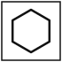
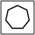

Mock 2 / Reasoning / Answers
Reasoning — Answers
Part II · Q71–100 · 30 marks
View questions without answers
Q.71Select the number that will come next in the series.
4, 6, 12, 30, 90, ?
- 1. 315
- 2. 270
- 3. 360
- 4. 300
Answer: 1 — The multipliers increase by 0.5: ×1.5, ×2, ×2.5, ×3, so the next is ×3.5: 90 × 3.5 = 315.
Q.72Select the number that will come next in the series.
7, 26, 63, 124, 215, ?
- 1. 343
- 2. 342
- 3. 336
- 4. 340
Answer: 2 — The terms are n³ − 1 for n = 2 to 6 (8−1, 27−1, 64−1, 125−1, 216−1), so the next is 7³ − 1 = 342.
Q.73Select the number that will come next in the series.
1, 4, 10, 22, 46, ?
- 1. 92
- 2. 94
- 3. 90
- 4. 96
Answer: 2 — Each term is ×2 + 2: 46 × 2 + 2 = 94.
Q.74Select the term that will come next in the series.
CEG, HJL, MOQ, ?
- 1. RSU
- 2. QSU
- 3. RTV
- 4. STV
Answer: 3 — Each letter moves 5 places from one term to the next: C→H→M→R, E→J→O→T, G→L→Q→V.
Q.75Select the term that will come next in the series.
K11, M13, P16, T20, ?
- 1. X24
- 2. Y24
- 3. Y25
- 4. Z26
Answer: 3 — The letters move +2, +3, +4, so next +5: T(20) → Y(25). The number is the letter's position in the alphabet.
Q.76In a certain code, PAPER is written as QCSIW. How will BOOKS be written in that code?
- 1. CPQNW
- 2. CQROX
- 3. CQRNX
- 4. DQROX
Answer: 2 — The letters move +1, +2, +3, +4, +5 in turn: B→C, O→Q, O→R, K→O, S→X.
Q.77In a certain code, ODISHA is written as AHSIDO. How will KONARK be written in that code?
- 1. KRANOK
- 2. KRANKO
- 3. KNAROK
- 4. KORANK
Answer: 1 — The word is written in reverse: KONARK → KRANOK.
Q.78In a certain code, '246' means 'good sweet fruit', '638' means 'sweet and simple', and '279' means 'good very nice'. Which digit stands for 'fruit'?
- 1. 2
- 2. 4
- 3. 6
- 4. 3
Answer: 2 — 'sweet' is common to the first two statements (6), and 'good' is common to the first and third (2). So 'fruit' = 4.
Q.79Select the option that is related to the third term in the same way as the second term is related to the first term.
Kalahandi : Bhawanipatna :: Mayurbhanj : ?
- 1. Baripada
- 2. Rairangpur
- 3. Karanjia
- 4. Udala
Answer: 1 — Bhawanipatna is the district headquarters of Kalahandi, and Baripada is the district headquarters of Mayurbhanj.
Q.80Select the option that is related to the third term in the same way as the second term is related to the first term.
Hydrophobia : Water :: Claustrophobia : ?
- 1. Heights
- 2. Crowds
- 3. Closed spaces
- 4. Darkness
Answer: 3 — Hydrophobia is a fear of water, and claustrophobia is a fear of closed spaces. Fear of heights is acrophobia.
Q.81Select the option that is related to the third number in the same way as the second number is related to the first number.
6 : 222 :: 7 : ?
- 1. 343
- 2. 336
- 3. 357
- 4. 350
Answer: 4 — 222 = 6³ + 6, so the answer is 7³ + 7 = 343 + 7 = 350.
Q.82Select the odd one out.
- 1. NALCO
- 2. SAIL
- 3. Infosys
- 4. BHEL
Answer: 3 — NALCO, SAIL and BHEL are public sector enterprises. Infosys is a private company.
Q.83In the series 145, 170, 197, 225, 257, one number does not follow the pattern. Which is it?
- 1. 225
- 2. 145
- 3. 197
- 4. 257
Answer: 1 — The terms are n² + 1: 12²+1 = 145, 13²+1 = 170, 14²+1 = 197, 15²+1 = 226 (not 225), 16²+1 = 257.
Q.84Select the odd letter pair.
- 1. DV
- 2. AZ
- 3. BY
- 4. CX
Answer: 1 — In the others, the two letters are mirror positions in the alphabet (A↔Z, B↔Y, C↔X). D's pair is W, not V.
Q.85Asha walks 10 m west, turns left and walks 5 m, turns left again and walks 10 m, then turns right and walks 5 m. Where is she now with respect to her starting point?
- 1. 10 m North
- 2. 5 m South
- 3. 10 m South
- 4. 15 m South
Answer: 3 — West 10, south 5, east 10 (back in line with the start), then right from east = south 5. Net position: 10 m south.
Q.86A clock is placed so that at 3:00 p.m. its hour hand points towards the east. In which direction will its minute hand point at 4:30 p.m.?
- 1. West
- 2. North
- 3. East
- 4. South
Answer: 4 — If 3 points east, then 12 points north and 6 points south. At 4:30 the minute hand is at 6, i.e. south.
Q.87In a queue of 40 people, A is 14th from the front and B is 17th from the back. How many people are standing between A and B?
- 1. 8
- 2. 10
- 3. 9
- 4. 11
Answer: 3 — B is 40 − 17 + 1 = 24th from the front. People between them: 24 − 14 − 1 = 9.
Q.88C scored more than A but less than E. B scored less than D but more than E. Who scored the second highest?
- 1. B
- 2. D
- 3. E
- 4. C
Answer: 1 — The order is D > B > E > C > A, so B is second.
Q.89Seven persons P, Q, R, S, T, U and V sit in a row facing north. S sits in the middle. P is third to the left of S. T is immediately to the right of S. Q sits at the extreme right end. V is immediately to the left of S. U is not adjacent to T. Who sits between T and Q?
- 1. U
- 2. R
- 3. V
- 4. P
Answer: 2 — From left to right: P, U, V, S, T, R, Q. U cannot be in seat 6 (next to T), so U is 2nd and R is 6th, between T and Q.
Q.90Read the statements and decide which of the conclusions logically follow.
Statements: All pens are pencils. Some pencils are erasers. No eraser is a sharpener.
Conclusions:
I. Some pens are erasers.
II. Some pencils are not sharpeners.
- 1. Only conclusion I follows
- 2. Only conclusion II follows
- 3. Both I and II follow
- 4. Neither I nor II follows
Answer: 2 — The pencils that are erasers cannot be sharpeners, so II follows. The erasers among pencils need not include any pens, so I does not follow.
Q.91Read the statements and decide which of the conclusions logically follow.
Statements: Some doctors are teachers. All teachers are writers.
Conclusions:
I. Some doctors are writers.
II. Some writers are doctors.
- 1. Only conclusion I follows
- 2. Only conclusion II follows
- 3. Both I and II follow
- 4. Neither I nor II follows
Answer: 3 — The doctors who are teachers are also writers, so I follows, and II is its converse. Both follow.
Q.92Statement: Only students who score above 60% in the entrance test will be admitted.
Conclusions:
I. A student who scores 55% will not be admitted.
II. Every student who scores above 60% will be admitted.
- 1. Only conclusion I follows
- 2. Only conclusion II follows
- 3. Both I and II follow
- 4. Neither I nor II follows
Answer: 1 — Scoring above 60% is a necessary condition, so I follows. It is not stated to be sufficient (seats may be limited), so II does not follow.
Q.93Statement: Every citizen of India aged 18 years or above has the right to vote.
Conclusions:
I. A 17-year-old Indian citizen cannot vote.
II. Every person aged above 18 living in India can vote.
- 1. Only conclusion I follows
- 2. Only conclusion II follows
- 3. Both I and II follow
- 4. Neither I nor II follows
Answer: 1 — I follows from the age condition. II does not, because the right is given to citizens, not to everyone living in India.
Q.94A clock shows 9:15. What time will its mirror image appear to show?
- 1. 3:45
- 2. 2:15
- 3. 2:45
- 4. 3:15
Answer: 3 — Mirror time = 11:60 − 9:15 = 2:45.
- 1. 24
- 2. 26
- 3. 28
- 4. 25
Answer: 4 — Third number = first × second + 1: 2×5+1 = 11, 3×4+1 = 13, 4×6+1 = 25.
Q.96How many triangles are there in the given figure?
- 1. 12
- 2. 16
- 3. 18
- 4. 20
Answer: 2 — 8 smallest triangles (two in each quarter) + 4 triangles meeting at the centre (each made of 2 small ones, e.g. top corners with the centre) + 4 half-rectangle triangles (each cut by a diagonal) = 16.
Q.97How many rectangles (including squares) are there in the given figure?
- 1. 18
- 2. 12
- 3. 15
- 4. 20
Answer: 1 — Choose 2 of the 3 horizontal lines (3 ways) and 2 of the 4 vertical lines (6 ways): 3 × 6 = 18.
Q.98The given sheet is folded to form a cube. Which number will be on the face opposite the face showing 2?
- 1. 5
- 2. 4
- 3. 6
- 4. 1
Answer: 1 — In this 'staircase' net, folding with 3 as the base gives 2 and 5 on opposite sides, 1 and 4 opposite, and 3 and 6 opposite.
Q.99Select the correct mirror image of the given figure when the mirror is placed at MN as shown.
- 1.
- 2.
- 3.
- 4.
Answer: 2 — A vertical mirror reverses the order of the characters and laterally inverts each one, but nothing turns upside down.
Q.100Select the figure that will come next in the given series.
- 1.

- 2.
- 3.

- 4.
Answer: 1 — The number of sides increases by one (3, 4, 5, 6) and the shading alternates (filled, empty, filled, empty), so the next is an empty hexagon.